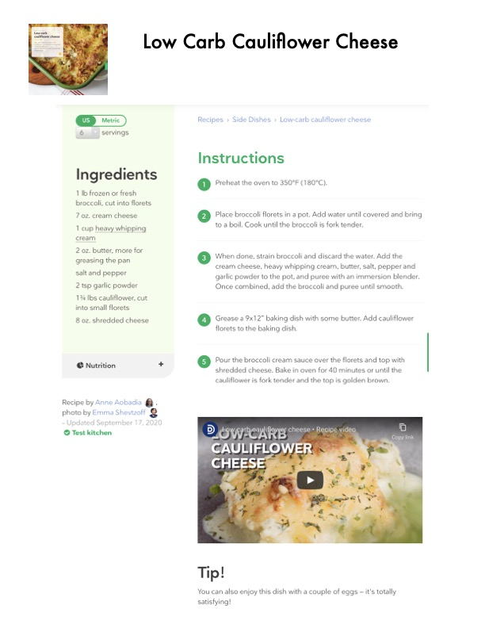

Low Carb Cauliflower Cheese

Original cookbook page 89
A low-carb cauliflower cheese dish with a creamy broccoli cheese sauce, perfect as a side dish.
Ingredients
- 1 lb frozen or fresh broccoli, cut into florets
- 7 oz. cream cheese
- 1 cup heavy whipping cream
- 2 oz. butter, more for greasing the pan
- salt and pepper
- 2 tsp garlic powder
- 1¾ lbs cauliflower, cut into small florets
- 8 oz. shredded cheese
Instructions
- Preheat the oven to 350°F (180°C).
- Place broccoli florets in a pot. Add water until covered and bring to a boil. Cook until the broccoli is fork tender.
- When done, strain broccoli and discard the water. Add the cream cheese, heavy whipping cream, butter, salt, pepper and garlic powder to the pot, and puree with an immersion blender. Once combined, add the broccoli and puree until smooth.
- Grease a 9x12" baking dish with some butter. Add cauliflower florets to the baking dish.
- Pour the broccoli cream sauce over the florets and top with shredded cheese. Bake in oven for 40 minutes or until the cauliflower is fork tender and the top is golden brown.
Recipe #89 from collection